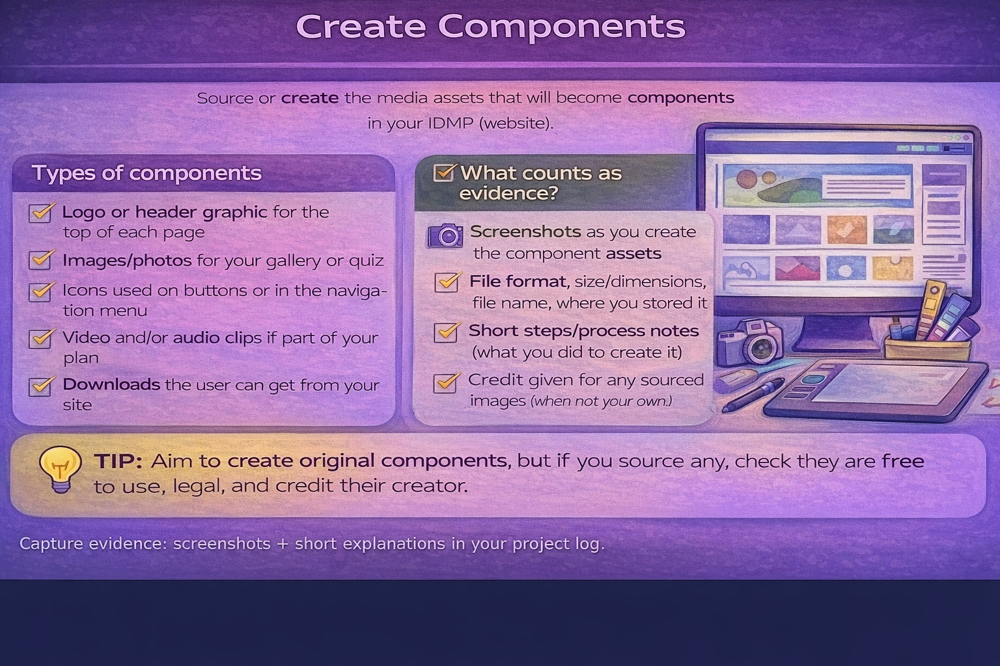

Task 2A(i) Create components
Source/create the media assets that will become components.
Create components
Show process screenshots
Name files sensibly
Tip:
Take screenshots of key steps: before/after edits, export settings, and where the asset is used on the site.
Building your website in Dreamweaver
This R097 guide explains what you need to create.
The Dreamweaver guide shows you how to actually build the website step-by-step.
Open the Dreamweaver Website Building Guide
Evidence while creating assets
- Annotated screenshots of asset creation (not just final export).
- Short notes on tools used (e.g., Photopea, Canva, Inkscape).
- File naming and folder location (e.g., img/, media/).
- Export settings (format, size, quality).
Minimum expectations
- A logo or header graphic.
- At least a few supporting images/graphics relevant to your content.
- Consistent styling (same palette, same icon style).
- Evidence of originality (your own designs or correctly credited sources).